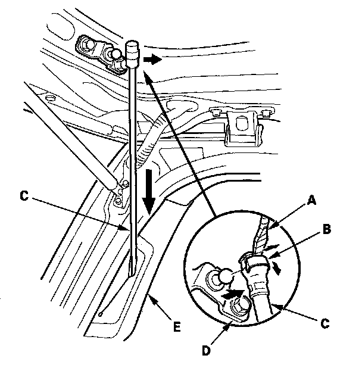
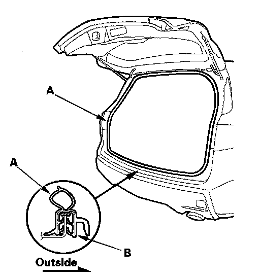
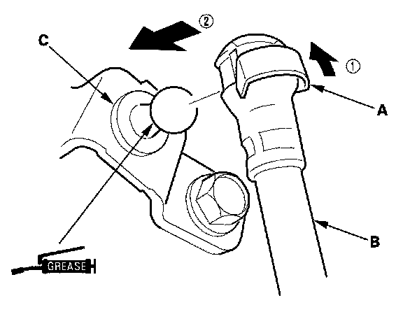

Trunk / Liftgate Weatherstrip: Service and Repair
Tailgate Weatherstrip Replacement1. With: power tailgate: Remove the left tailgate side trim.

2. With power tailgate: Use a flat-tip screwdriver (A) to pry the clip (B) downward from the power tailgate motor rod (C), then release the rod from the pivot bracket (D) and push it in the quarter pillar trim (E). Do not remove the clip from the rod.

3. Remove the tailgate weatherstrip (A) by pulling it out.
4. Locate the painted alignment mark (B) on the tailgate weatherstrip. Align the painted mark with the alignment tab in the center of the tailgate opening, and install the tailgate weatherstrip all the way around. Make sure there are no wrinkles in the weatherstrip.

5. With power tailgate: Set the clip (A) on the original position, then reattach the power tailgate motor rod (B) on the pivot bracket (C) by pushing the rod onto the pivot.
6. With power tailgate: Reinstall the left tailgate side trim.
7. Check for water leaks.